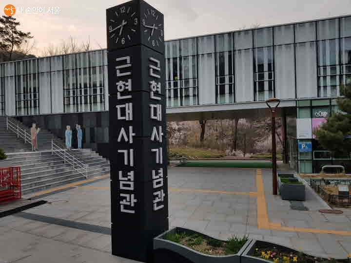

| 대표이미지 | 상호 | 설명 | 홈페이지 | 문의 및 안내 | 이용시간 | 위치 |
|---|---|---|---|---|---|---|
|  | 근현대사기념관 | 근현대사기념관이 위치한 서울시 강북구는 3·1 운동의 발원지인 봉황각과 순국선열 애국지사의 묘역 그리고 국립 4·19 민주묘지가 자리 잡고 있는 독립정신과 민주주의의 성지로, 선열들의 높은 뜻을 제대로 기억하고 전파하기 위해 동학농민운동부터 4·19 혁명까지 자랑스러운 우리 역사를 전시에 담았다. ‘자유’, ‘평등’, ‘민주’의 이념이 선열들이 피땀 흘려 체득하고 축적해 온 소중한 가치임을 감동이 있는 서사로 전달함으로써 ‘독립운동가들이 꿈꾼 나라’, ‘사월혁명의 투사들이 소원했던 나라’가 바로 대한민국의 미래상임을 알리고자 2016년 5월에 개관하였다. 매해 새로운 기획전과 역사 체험 프로그램을 진행한다. | 홈페이지 연결! | 02-903-7580 | 09:00~18:00 | 서울특별시 강북구 4.19로 114 (수유동) |